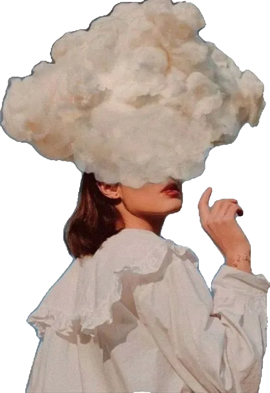
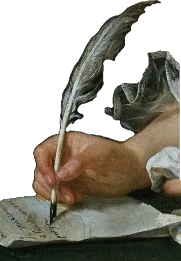
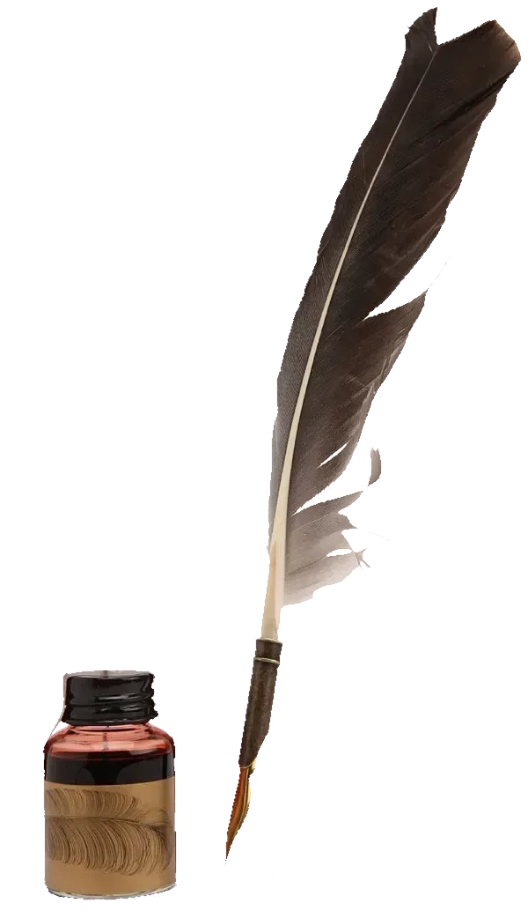
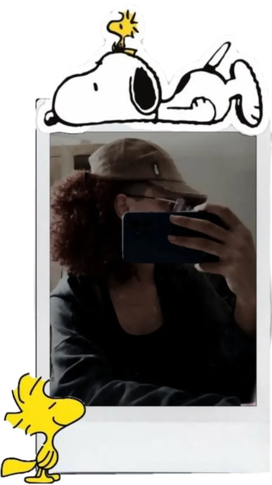

palavras que habitam o tempo
poemas autorais
Aqui você encontra os poemas escritos por quem faz parte desta revista. São versos autorais, nascidos de experiências reais, sentimentos guardados e momentos que pediam para ser transformados em palavras.
Cada poema carrega um pedaço de quem o escreveu sonhos, memórias, dores e alegrias colocados em versos para serem lidos e sentidos por você.

Anna Vitoria Eduarda
Eduarda